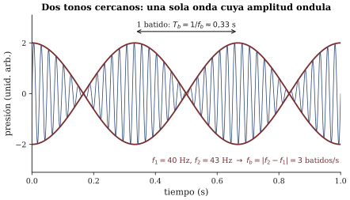

Capítulo 7 — La primera cosecha (y una ondulación)
Lectura previa a la sesión 07. Objetivos: preparación de la Prueba 1 (OA1.1, OA1.2, OA2.1, OA4.1, OA4.2, más la escucha escrita OA3.1) y anticipo de los batidos (OA2.2). Capítulo más corto que los anteriores, a propósito: esta semana su energía va al estudio.
Una semana distinta
La sesión 07 no se parece a las anteriores. El primer módulo completo es la Prueba 1, que cosecha todo lo sembrado entre las sesiones 01 y 06. El segundo módulo es deliberadamente liviano — sabemos cómo se sale de una prueba — y consiste en escuchar, casi sin lápiz, un fenómeno nuevo que resultará ser la llave de las tres sesiones siguientes.
Este capítulo acompaña esa asimetría: su primera mitad es un mapa para preparar la prueba; la segunda, el anticipo de esa ondulación.
Primera mitad: cómo preparar la Prueba 1
Qué es (y qué no es) esta prueba
La prueba dura hasta 60 minutos, es individual, de respuesta corta y estructurada, y suena: incluye estímulos que se reproducen por el equipo de la sala en momentos anunciados (cada uno dos veces, más una pasada de repaso), figuras impresas — espectros, espectrogramas, curvas — para leer e interpretar, y una escucha escrita corta que se evalúa con la rúbrica de escucha argumentada del curso: describir, hipotetizar, proponer verificación, y distinguir lo que se oye de lo que se interpreta. No necesita calculadora: toda la aritmética es de proporciones — el doble, la mitad, diez veces —, el estilo que el curso practica desde el primer día. Los recuadros opcionales “para ingeniería” de los capítulos anteriores no entran: son y siguen siendo opcionales. Lo de la sesión 06, que es lo más fresco, entra solo en versión básica: leer un nivel, aplicar las reglas de +10 y +3 dB, interpretar una curva isofónica.
Estudiar para esta prueba no es memorizar definiciones: es dejar operativas las tres capas que el curso repite desde la sesión 01 — lo que se oye, el mecanismo que lo produce y la medición que lo confirma. Todo ítem de la prueba vive en una de esas capas o en el tránsito entre ellas.
El mapa de los seis capítulos
Del capítulo 1 quedó la idea fundacional y dos números: un tono es una vibración que se repite lo bastante rápido; f cuenta repeticiones por segundo (Hz) y T = 1/f es la duración de cada una. Y quedó la higiene de vocabulario que la rúbrica exige: frecuencia, intensidad y espectro describen el sonido; altura, sonoridad y timbre describen la experiencia. Si al estudiar puede clasificar cualquier término del curso en una de esas dos columnas sin dudar, esa base está firme.
Del capítulo 2, los anteojos: forma de onda (presión contra tiempo), espectro (nivel contra frecuencia) y espectrograma (tiempo, frecuencia y color). Ante cualquier gráfico, el reflejo entrenado es siempre el mismo: ¿qué hay en cada eje, en qué unidades, y qué significa la altura del trazo o el color? Repase también la relación estrella v = \lambda f (con v \approx 343 m/s en el aire a 20 °C) y el límite de la herramienta: una app que muestrea a 44 100 muestras por segundo no puede mostrar nada sobre la mitad de esa cifra.
Del capítulo 3, la gramática de los objetos que suenan: todo objeto tiene su repertorio de frecuencias características, cada una con su modo (su forma de vibrar, con nodos quietos y antinodos móviles) y su propio decaimiento. Y el vocabulario obligatorio del curso: parcial es cualquier componente del espectro; armónico es un parcial en razón entera con la fundamental (f_n = n f_1). Cuerdas: armónicas. Vasos, placas, sartenes: no. Un espectrograma con líneas equiespaciadas y uno con líneas “donde cayeron” cuentan esa diferencia a simple vista.
Del capítulo 4, la receta: el timbre de una cuerda es la lista de amplitudes de sus parciales, y esa lista depende de dónde se excita (excitar en un nodo de un modo lo silencia; pulsar a la mitad deja solo los impares) más la envolvente temporal. Y las tres palancas de la afinación con sus proporciones: la mitad del largo → el doble de frecuencia; para duplicar la frecuencia por tensión hay que cuadruplicarla; más masa por metro → más grave.
Del capítulo 5, la sorpresa perceptual mayor del semestre: la altura no es un parcial que “está”, es un patrón que el oído reconstruye. Por eso el bajo sobrevive al parlante del celular que no puede radiarlo. Y la octava es una razón (2:1), no una diferencia de hertz.
Del capítulo 6, la vara de medir: el decibel compara, no cuenta (L_p en dB SPL, referencia 20 µPa); +10 dB es multiplicar la intensidad por 10 y suena como el doble; +3 dB es duplicar la intensidad y es un cambio chico (dos fuentes iguales); las isofónicas dicen que el oído es más sordo a los graves cuanto más bajo el nivel. Y la higiene de medición: sin calibración, confíe en las comparaciones, no en los valores absolutos.
Cómo estudiar (en este curso)
Tres consejos alineados con cómo se le va a preguntar. Primero, estudie con los oídos y con la app: tome su celular, grabe un golpe, una nota cantada, un silbido, y lea sus espectrogramas hasta que identificar ejes y patrones sea automático — es exactamente la habilidad que la prueba mide en sus figuras. Segundo, rehaga sus tickets de salida: las seis preguntas que cerraron las sesiones (¿cómo se ve un pulso dibujado?, ¿el vaso es una línea o varias?, ¿medio o puente?, ¿y si apago la fundamental?, ¿misma energía, igual de fuerte?…) son el esqueleto conceptual del semestre, y ya conoce el valor de contrastar lo que predijo con lo que pasó. Tercero, practique proporciones en voz alta: mitad de largo, doble de frecuencia; diez fuentes, +10 dB; 44 100 muestras, techo en 22 050. Si puede explicárselo a un compañero sin escribir fórmulas, está listo.
Como autochequeo final, usted debería poder: leer cualquier espectrograma diciendo qué eje es qué y si el sonido es armónico o inarmónico; predecir con proporciones el efecto de cambiar largo o tensión de una cuerda; explicar por qué una nota no pierde su altura al perder su fundamental; aplicar +10/+3 dB a fuentes que se suman; y ante un sonido desconocido, describir–hipotetizar–verificar sin mezclar las tres cosas.
Segunda mitad: la ondulación que viene
Al salir de la prueba lo espera un fenómeno nuevo, y usted ya escribió sobre él sin saberlo: su ticket de salida de la sesión 06 preguntaba qué se oye cuando dos flautas tocan la misma nota y una queda apenas desafinada.
La física elemental del asunto cabe en un párrafo. Dos tonos casi iguales — digamos 440 y 441 Hz — son dos trenes de empujones al aire casi sincronizados. En el instante en que empujan a la vez, se refuerzan. Pero el de 441 completa un ciclo más por segundo: se va adelantando, y medio segundo después, cuando uno empuja, el otro succiona — se cancelan y el sonido casi desaparece. Al cumplirse el segundo, la ventaja es un ciclo completo y todo recomienza. El resultado audible es notable: no se oyen dos notas — están demasiado cerca para que el oído las separe — sino una sola nota cuya sonoridad ondula: refuerzo, silencio, refuerzo, silencio. Esa ondulación se llama batido, y su rapidez obedece a una regla exacta y limpia que se deduce del párrafo anterior:
f_b = |f_2 - f_1|
Un batido por segundo por cada hertz de diferencia. En la sesión no le pediremos creerla: la va a contar, con sus propios oídos, contra los números en pantalla.

Dos preguntas quedan deliberadamente abiertas, porque son suyas. La primera: si el batido delata diferencias de frecuencia que ningún oído distingue como dos alturas, ¿qué herramienta práctica acaba de ganar un músico que afina? (Piense en qué se oye cuando la diferencia se acerca a cero.) La segunda, más honda: ¿qué pasará cuando la diferencia crezca — 5, 10, 20, 30 Hz? ¿Se podrá seguir contando? ¿Qué se oirá entonces? No lo busque todavía: lo va a oír en la sala, y lo que su oído le diga ahí es el punto de partida de la sesión 08.
Preguntas que la sesión va a responder
- ¿Qué se oye exactamente cuando dos fuentes tocan casi la misma frecuencia — dos notas, una nota desafinada, u otra cosa?
- ¿A qué ritmo ondula esa “otra cosa”, y qué relación aritmética tiene con las dos frecuencias presentes?
- ¿Cómo se usa el batido para afinar dos fuentes al unísono con más precisión que la que tiene el oído para distinguir alturas?
- ¿Qué le pasa al batido cuando la desafinación crece más y más — y dónde deja de ser batido?
Referencias del capítulo
- Roederer (1997), cap. 2, sec. 2.4 (dentro de pp. 24–78) — batidos de primer orden, tratamiento perceptual en español.
- Benade (1990), cap. 13, sec. 13.5 — batidos y sonoridad de sonidos combinados; cap. 14, introducción — hacia las relaciones de altura.
- Campbell & Greated (1987), cap. 3 (pp. 69–164) — altura, sonoridad y timbre: el capítulo que sostiene buena parte de la Prueba 1.
- Rossing, Moore & Wheeler (2002), cap. 8, secs. 8.1–8.4 — ejercicios de batidos para práctica adicional (no obligatorio).